"If it moves, count it. If you cannot count it, do not call it a pattern. If it is magic, you missed a number."
— after Revolver. The board, colored, is the counting.
This page replaces the old AVFI v4 detection page. That page marked
stretch-z confirmations across 185 charts — a design-sample artifact
of the pre-WHAT era, superseded by the clue program. By directive it is
removed and replaced with what the program actually studies now: the
current board as a heat map, and the file of significant moves already
studied. Everything here is descriptive —
candidates and case files, never claims.
1. The heat map — the board, colored
Snapshot 2026-11-12. The twelve deepest artifact-clean, stablecoin-free
coils of the top-500 board. Green = coiled, quiet, primed; red = hot or
extended. The frustration column is scaled to storjusd's 72.3 (the
strongest grievance ever scored on a candidate); n/a = no funding/OI
market exists for that coin, so the grievance is unmeasurable. Read the
table the way the program reads the board: the left half is the coil, the
right half is the grievance — and the grievance column is the
reason the program is flat.
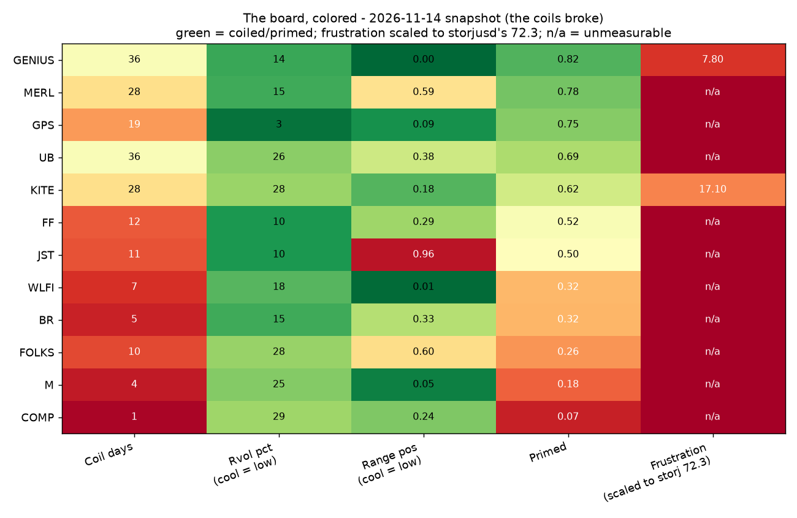
The board at a glance: coils everywhere (green left half),
grievance nowhere (red right half). The lion is quiet; nobody has
touched his food.
Series
Cap rank
Coil days
Rvol pct
Range pos
Primed
Frustration
KAVA
320
41
2.1
0.88
0.97
14.3
GENIUS
271
34
6.8
0.01
0.92
11.6
SHIB
37
33
11.2
0.09
0.86
n/a
HOLO
456
70
13.9
0.05
0.83
12.0
BSV
128
32
16.1
0.43
0.81
n/a
XNO
480
32
19.5
0.02
0.76
n/a
XVS
467
26
13.0
0.23
0.76
20.3
MERL
491
26
13.8
0.51
0.75
n/a
DGB
393
38
20.9
0.26
0.75
n/a
UB
141
34
21.3
0.41
0.74
n/a
GNO
137
66
21.7
0.33
0.74
n/a
BONK
146
44
22.0
0.08
0.73
n/a
Frustration reference points: storjusd 72.3,
FTX before its crash 38.4. The whole current board scores under 21.
2. The significant moves studied
The case file of the biggest genuine moves in the panel, with the
pre-move state reconstructed causally at the last quiet day. Data
artifacts (re-denominations, launch-era near-zero prices) were flagged
and excluded before this file was written. These are the moves the
compression and grievance logic was built against — including the
one that came with no coil, kept in the file precisely because
a theory that only remembers its hits is marketing.
CFX, +1,100% / 30d — the textbook case:
a 53-day deep coil, volatility in its bottom 5.5 percentile, at 7% of its
yearly range, down 69% on the year. The signature was fully measurable
the day before.
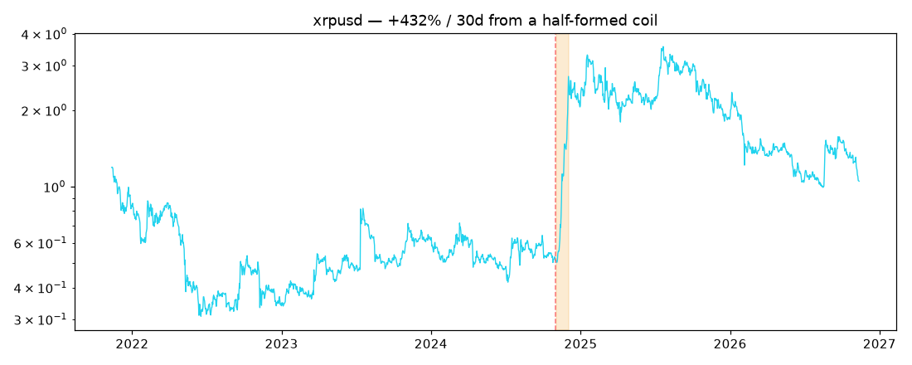
XRP, +432% / 30d — the half-formed coil:
bottom-12th-percentile volatility, 12 quiet days, 1.6σ below its mean,
flat year, dried volume. The strict ≥20-day rule would have missed it;
the quiet-and-forgotten signature was there.
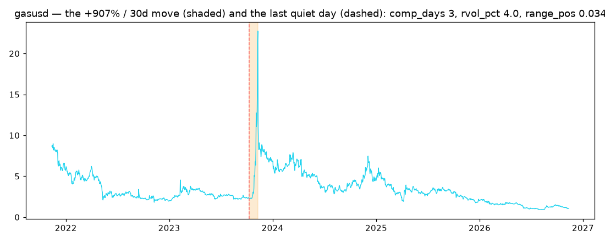
GAS, +907% / 30d — volatility in its
bottom 4th percentile, pinned at 3.4% of its range. Quiet, low,
forgotten — then nine-fold.
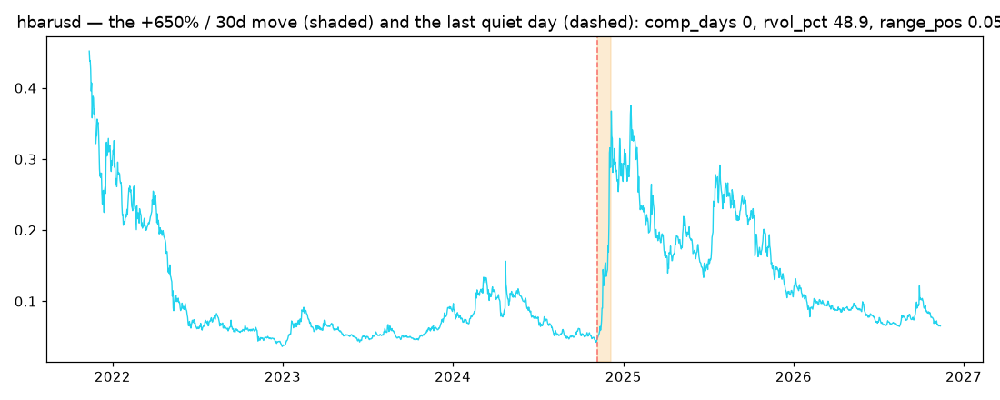
HBAR, +650% / 30d — pinned at 5.7% of
its yearly range, down 57% on the year: the forgotten-and-pinned
signature, fully present before the move.ZEC, +513% / 30d — the honest boundary.
No coil was present: volatility at its 66th percentile, 90% up its range,
already +2.5σ extended. This move came from momentum, not compression.
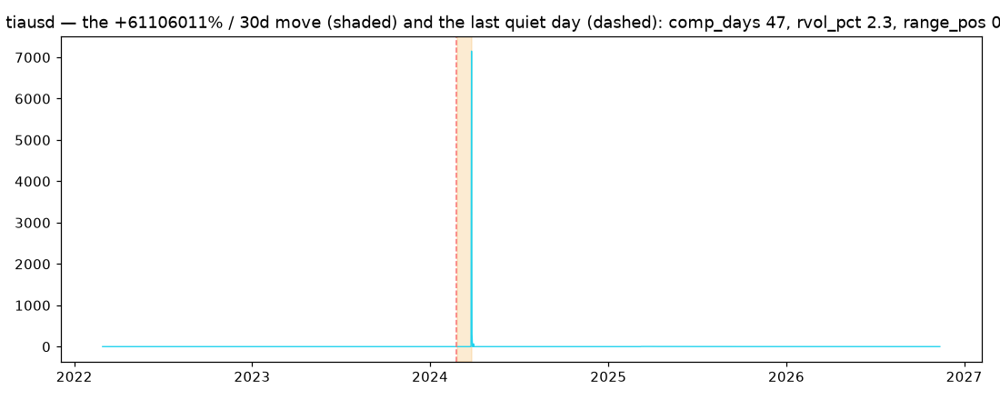
TIA, the terminal collapse — preceded
by a 9.95σ blow-off top: the short-side clue. Extreme stretch before the
falls; the same signature read before strkusd's −99.7%.
3. The move census — every significant move on the board
Six anecdotes are not a study. This census finds every
significant move episode across 532 series (the TVC panel's five
years, the top-500 cache, the commodities and equities set): 1,461
episodes in total, 61 flagged as artifacts (launch-era bases,
re-denominations) and excluded from the aggregates. Crypto threshold
≥+100% or ≤−70% per 30 days; non-crypto ≥+30% or ≤−25%.
Overlapping windows collapse to the largest move, 30-day gap enforced.
The pre-move state is measured causally at the last quiet day, every
time.
Aggregate (artifact-free)
n
Deep coil before
Quiet before
Blow-off before
At range bottom
At range top
Crypto UP (≥+100%/30d)
714
20.9%
47.2%
4.2%
72.3%
4.3%
Crypto DOWN (≤−70%/30d)
71
7.0%
29.6%
22.5%
45.1%
22.5%
Non-crypto UP (≥+30%/30d)
358
5.6%
19.8%
3.1%
43.3%
18.4%
Non-crypto DOWN (≤−25%/30d)
257
4.3%
12.1%
21.8%
14.4%
47.1%
What the census says, descriptively: big crypto up-moves start at the
bottom of the range (72.3%), half of them out of
quiet (47.2%), a fifth out of a true deep coil — and almost never
out of a blow-off (4.2%). The blow-off signature belongs to the
down side (22.5% vs 4.2% — the short-side
clue, now measured on 71 collapses instead of two anecdotes).
Non-crypto down-moves are the mirror image: they start at the range top
(47.1%) with a hot year behind them, not coiled and not quiet. The
forgotten-and-pinned signature is crypto's; the extended-and-exhausted
signature is everyone's.
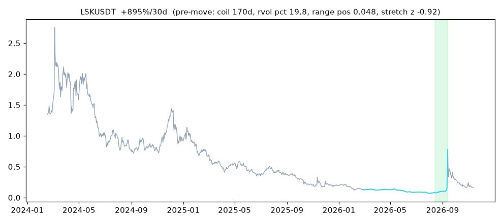
LSK, +895% / 30d — the census's
crown jewel: a 170-day coil (the deepest ever
measured before a move), realized vol at its 20th percentile, pinned at
5% of the range, down 65% on the year. The signature was measurable for
half a year.
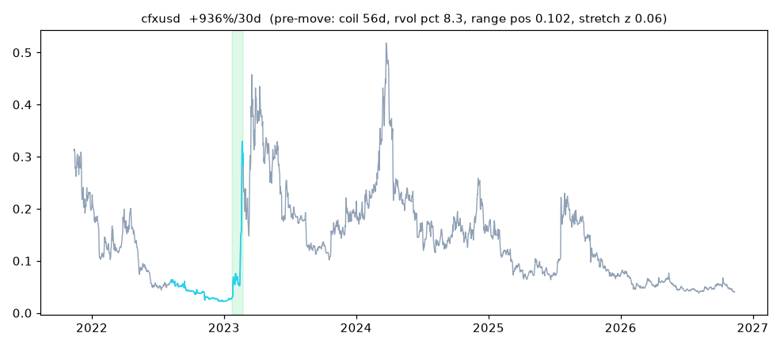
CFX, +936% / 30d — the textbook
case confirmed inside the census: 56-day coil, vol at its 8th
percentile, 10% of range, down 66% on the year.
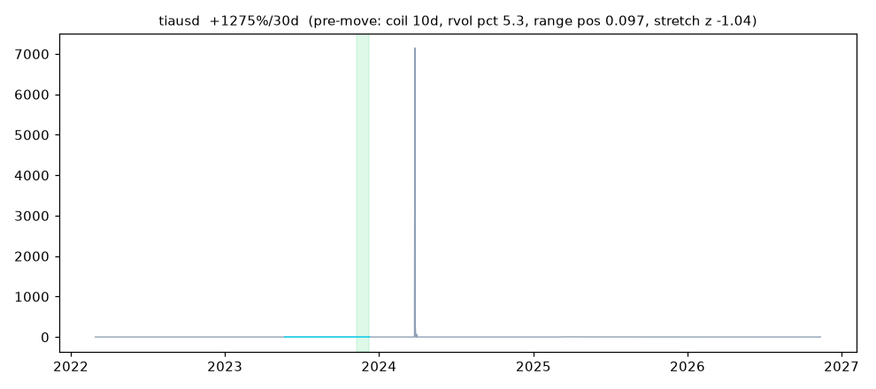
TIA, +1,275% / 30d — the up-move
that preceded the famous collapse: launched from a 10-day quiet coil at
the range bottom. The census catches both legs of the same story.
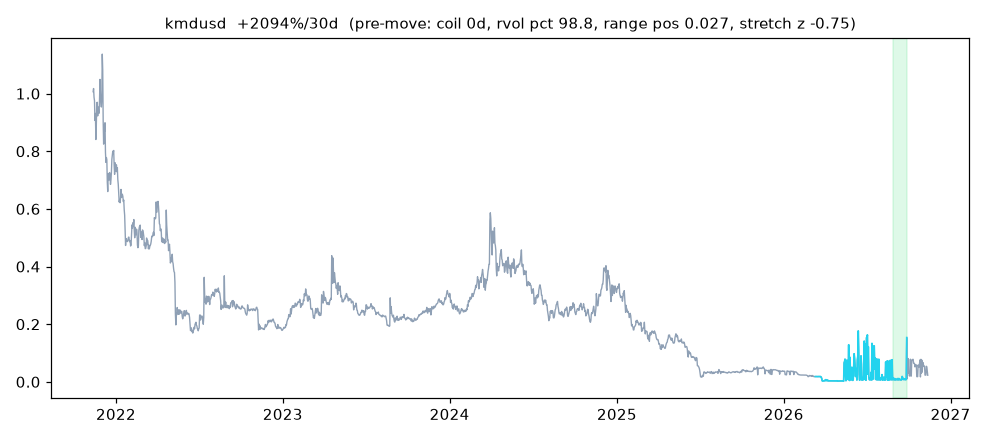
KMD, +2,094% / 30d — the census's
largest clean move, from the range bottom (3% of range) after a year
down 82%. Not coiled, not quiet — the honest counter-example kept
in the file: not every big move comes from a coil.
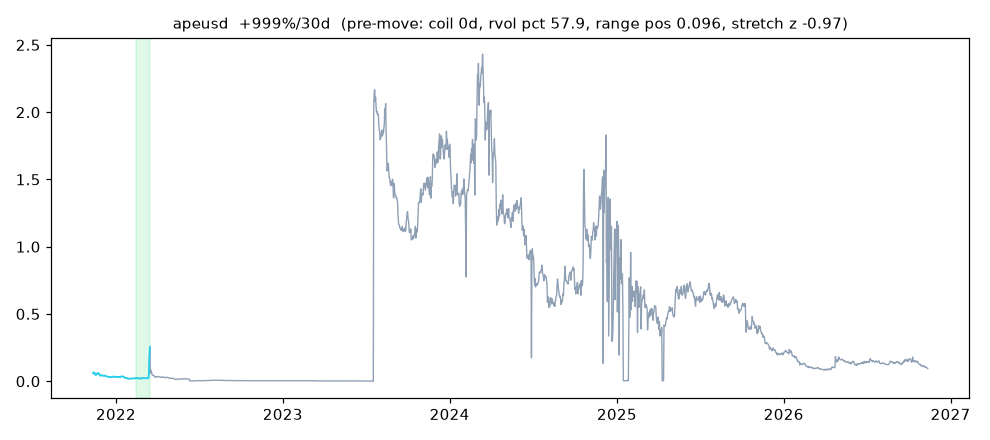
APE, +991% / 30d — from 10% of
range, a year down 94%. Forgotten and pinned.
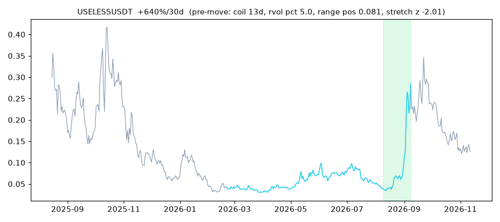
USELESS, +650% / 30d — the census
keeps even the jokes: a memecoin at the range bottom that did what the
range bottom does. Multiplicity binds; the census counts, it does not
predict.
4. The hundredfold board — 100 exponential up-moves, charted
Directive: go through 100 charts that go up exponentially. Here they
are — the 100 largest clean exponential up-moves on the board
(one per asset, deduplicated; every move ≥ +227% and some beyond
+2,000% within 30 days), each with its 30-day move window shaded green
and the causal pre-move state in the caption. Read the captions the way
the census taught you to: most of these begin at the range bottom, half
out of quiet, a fifth out of a true deep coil — and the honest
counter-examples are charted too, because a gallery that only shows
the coiled ones would be marketing. Descriptive only; scanning 303
distinct movers for the hundred biggest finds big movers by
construction; multiplicity binds; C7 stays sealed.
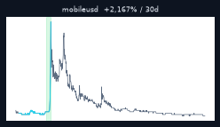
mobileusd +2,167%/30d · not quiet · rvol pct 44 · range pos 0.67 · 2023-12-18
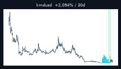
kmdusd +2,094%/30d · not quiet · rvol pct 99 · range pos 0.03 · 2026-09-27
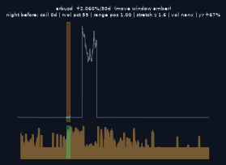
arbusd +2,060%/30d · not quiet · rvol pct 59 · range pos 1.00 · 2023-03-20
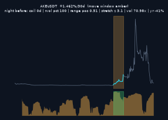
AKEUSDT +1,462%/30d · not quiet · rvol pct 100 · range pos 0.51 · 2026-08-14
cotiusd +376%/30d · not quiet · rvol pct 49 · range pos 0.49 · 2024-02-26QNTUSDT +370%/30d · not quiet · rvol pct 35 · range pos 0.18 · 2026-09-30qntusd +369%/30d · not quiet · rvol pct 38 · range pos 0.18 · 2026-09-30enjusd +367%/30d · quiet · rvol pct 5 · range pos 0.02 · 2026-04-15ENJUSDT +365%/30d · 20d coil · rvol pct 1 · range pos 0.02 · 2026-04-15hbarusd +361%/30d · not quiet · rvol pct 68 · range pos 0.19 · 2024-12-14HBARUSDT +360%/30d · not quiet · rvol pct 72 · range pos 0.19 · 2024-12-14RSRUSDT +355%/30d · 53d coil · rvol pct 21 · range pos 0.25 · 2024-12-03chrpusd +344%/30d · 35d coil · rvol pct 8 · range pos 0.00 · 2023-03-13ALGOUSDT +344%/30d · 49d coil · rvol pct 31 · range pos 0.02 · 2024-12-02algousd +341%/30d · 52d coil · rvol pct 28 · range pos 0.02 · 2024-12-02rdntusd +339%/30d · 27d coil · rvol pct 18 · range pos 0.17 · 2023-02-11btgusd +339%/30d · not quiet · rvol pct 89 · range pos 0.01 · 2025-06-20PENGUUSDT +331%/30d · 25d coil · rvol pct 6 · range pos 0.12 · 2025-07-21STRKUSDT +330%/30d · not quiet · rvol pct 63 · range pos 0.09 · 2026-10-11zilusd +324%/30d · not quiet · rvol pct 44 · range pos 0.08 · 2022-04-01trbusd +320%/30d · not quiet · rvol pct 40 · range pos 0.11 · 2023-09-16renderusd +318%/30d · 33d coil · rvol pct 10 · range pos 0.06 · 2023-02-02SKRUSDT +316%/30d · quiet · rvol pct 14 · range pos 0.00 · 2026-08-31zrxusd +312%/30d · not quiet · rvol pct 61 · range pos 0.46 · 2024-03-14SANDUSDT +311%/30d · not quiet · rvol pct 39 · range pos 0.00 · 2024-12-04sandusd +311%/30d · not quiet · rvol pct 36 · range pos 0.00 · 2024-12-04ALLOUSDT +307%/30d · not quiet · rvol pct 52 · range pos 0.14 · 2026-06-06arkmusd +302%/30d · not quiet · rvol pct 42 · range pos 0.56 · 2024-02-28hntusd +300%/30d · 20d coil · rvol pct 1 · range pos 0.00 · 2026-08-30dgbusd +300%/30d · not quiet · rvol pct 38 · range pos 0.00 · 2024-12-04pivxusd +299%/30d · not quiet · rvol pct 97 · range pos 0.03 · 2026-09-30SPOT_DGBUSDT +299%/30d · 54d coil · rvol pct 32 · range pos 0.00 · 2024-12-04VETUSDT +294%/30d · quiet · rvol pct 28 · range pos 0.00 · 2024-12-03yggusd +292%/30d · quiet · rvol pct 21 · range pos 0.03 · 2023-08-06vetusd +291%/30d · quiet · rvol pct 29 · range pos 0.00 · 2024-12-03HUSDT +291%/30d · quiet · rvol pct 31 · range pos 0.44 · 2026-06-07BUSDT +290%/30d · quiet · rvol pct 4 · range pos 0.06 · 2026-05-12runeusd +284%/30d · not quiet · rvol pct 58 · range pos 0.57 · 2023-11-16santosusd +280%/30d · 25d coil · rvol pct 1 · range pos 0.26 · 2022-08-24DASHUSDT +278%/30d · not quiet · rvol pct 100 · range pos 0.68 · 2025-11-06rlcusd +275%/30d · 24d coil · rvol pct 10 · range pos 0.06 · 2026-10-11JELLYJELLYUSDT +274%/30d · not quiet · rvol pct 77 · range pos 0.72 · 2025-11-04dashusd +271%/30d · not quiet · rvol pct 100 · range pos 0.69 · 2025-11-06SUSHIUSDT +268%/30d · not quiet · rvol pct 89 · range pos 0.14 · 2024-12-08TURBOUSDT +267%/30d · quiet · rvol pct 12 · range pos 0.00 · 2025-05-06FARTCOINUSDT +266%/30d · not quiet · rvol pct 46 · range pos 0.01 · 2025-04-12wldusd +264%/30d · not quiet · rvol pct 72 · range pos 0.53 · 2024-02-22sushiusd +256%/30d · not quiet · rvol pct 79 · range pos 0.14 · 2024-12-08VVVUSDT +255%/30d · not quiet · rvol pct 91 · range pos 0.23 · 2026-03-07BIOUSDT +254%/30d · 22d coil · rvol pct 4 · range pos 0.00 · 2026-05-02IDOLUSDT +253%/30d · quiet · rvol pct 7 · range pos 0.02 · 2026-11-07BTWUSDT +249%/30d · quiet · rvol pct 5 · range pos 0.91 · 2026-10-09ampusd +249%/30d · quiet · rvol pct 9 · range pos 0.82 · 2024-03-13BRUSDT +248%/30d · not quiet · rvol pct 61 · range pos 0.72 · 2026-10-01AXSUSDT +247%/30d · not quiet · rvol pct 35 · range pos 0.01 · 2026-01-23axsusd +246%/30d · not quiet · rvol pct 39 · range pos 0.01 · 2026-01-23SPOT_RAYUSDT +246%/30d · not quiet · rvol pct 39 · range pos 0.40 · 2024-11-09GALAUSDT +245%/30d · not quiet · rvol pct 37 · range pos 0.03 · 2024-12-04dogeusd +243%/30d · not quiet · rvol pct 56 · range pos 0.23 · 2024-11-12DOGEUSDT +242%/30d · not quiet · rvol pct 38 · range pos 0.24 · 2024-11-13thetausd +239%/30d · quiet · rvol pct 24 · range pos 0.54 · 2024-03-11fetusd +233%/30d · quiet · rvol pct 24 · range pos 0.61 · 2024-03-02JASMYUSDT +232%/30d · 70d coil · rvol pct 21 · range pos 0.05 · 2024-12-05CFXUSDT +230%/30d · quiet · rvol pct 20 · range pos 0.01 · 2025-07-21ETHFIUSDT +228%/30d · not quiet · rvol pct 52 · range pos 0.00 · 2025-05-15ethfiusd +227%/30d · not quiet · rvol pct 52 · range pos 0.00 · 2025-05-15
5. The night before — what could be said about the lion on the
night it was quiet
Directive: charts of what was knowable on the night before the lion
made the move. Here is the board as it existed on the last quiet day
before the 27 biggest moves on record: the price chart truncated at
that night — nothing after it existed yet — with the
coil window shaded and the volatility-percentile strip beneath. The
caption states exactly what was measurable that night (coil depth,
vol percentile, position in the yearly range, stretch), and the last
line records what the lion then did. This is the honest form of the
clue: no chart here contains the move it
precedes. What it contains is the state — and the state
is what C7 measured at +7.9 points over matched quiet. Read them and
notice how often the night-before picture is boring: low, quiet,
forgotten. The lion never looks like a lion the night before.
Descriptive only; multiplicity binds; C7 sealed.
mobileusd · the night before 2023-11-18 · not quiet, rvol pct 44, range pos 0.67, stretch z 1.4 then: +2,167% in the next 30 dayskmdusd · the night before 2026-08-28 · not quiet, rvol pct 99, range pos 0.03, stretch z -0.8 then: +2,094% in the next 30 daysarbusd · the night before 2023-02-18 · not quiet, rvol pct 59, range pos 1.00, stretch z 1.6 then: +2,060% in the next 30 daysAKEUSDT · the night before 2026-07-15 · not quiet, rvol pct 100, range pos 0.51, stretch z 3.1 then: +1,462% in the next 30 daystiausd · the night before 2023-11-09 · quiet, rvol pct 5, range pos 0.10, stretch z -1.0 then: +1,275% in the next 30 daysturbousd · the night before 2024-04-27 · not quiet, rvol pct 60, range pos 0.42, stretch z 0.0 then: +1,200% in the next 30 dayscfxusd · the night before 2023-01-24 · 56d coil, rvol pct 8, range pos 0.10, stretch z 0.1 then: +936% in the next 30 daysLSKUSDT · the night before 2026-08-14 · 170d coil, rvol pct 20, range pos 0.05, stretch z -0.9 then: +895% in the next 30 daysordiusd · the night before 2023-11-05 · not quiet, rvol pct 69, range pos 0.27, stretch z 2.6 then: +737% in the next 30 daysUBUSDT · the night before 2026-04-06 · not quiet, rvol pct 85, range pos 0.00, stretch z -3.0 then: +647% in the next 30 daysUSELESSUSDT · the night before 2026-08-09 · quiet, rvol pct 5, range pos 0.08, stretch z -2.0 then: +640% in the next 30 daystonusd · the night before 2025-06-30 · not quiet, rvol pct 88, range pos 0.12, stretch z -1.3 then: +636% in the next 30 dayslskusd · the night before 2026-08-14 · quiet, rvol pct 27, range pos 0.05, stretch z -0.9 then: +623% in the next 30 daysjupusd · the night before 2025-11-05 · not quiet, rvol pct 95, range pos 0.00, stretch z -7.2 then: +600% in the next 30 daysstrkusd · the night before 2026-02-10 · quiet, rvol pct 1, range pos 0.00, stretch z -0.7 then: +535% in the next 30 daysxvgusd · the night before 2024-11-04 · not quiet, rvol pct 41, range pos 0.02, stretch z -1.9 then: +531% in the next 30 dayszecusd · the night before 2025-09-11 · not quiet, rvol pct 61, range pos 0.59, stretch z 1.5 then: +510% in the next 30 daysZECUSDT · the night before 2025-09-11 · not quiet, rvol pct 56, range pos 0.59, stretch z 1.6 then: +507% in the next 30 daysxlmusd · the night before 2024-10-25 · 60d coil, rvol pct 8, range pos 0.13, stretch z -0.6 then: +475% in the next 30 daysXLMUSDT · the night before 2024-10-25 · quiet, rvol pct 9, range pos 0.13, stretch z -0.6 then: +474% in the next 30 daysDUSKUSDT · the night before 2025-12-21 · quiet, rvol pct 10, range pos 0.02, stretch z -1.5 then: +468% in the next 30 daysONEUSDT · the night before 2026-08-22 · not quiet, rvol pct 97, range pos 0.02, stretch z -1.7 then: +466% in the next 30 daysgasusd · the night before 2023-10-05 · not quiet, rvol pct 34, range pos 0.05, stretch z -1.0 then: +457% in the next 30 daysQUSDT · the night before 2026-09-19 · quiet, rvol pct 21, range pos 0.59, stretch z 1.1 then: +453% in the next 30 daysogusd · the night before 2023-03-09 · 85d coil, rvol pct 4, range pos 0.02, stretch z -1.6 then: +450% in the next 30 daysarusd · the night before 2024-02-07 · quiet, rvol pct 22, range pos 0.65, stretch z -0.2 then: +414% in the next 30 daysmovrusd · the night before 2023-11-24 · not quiet, rvol pct 96, range pos 0.53, stretch z 2.6 then: +394% in the next 30 days
Machine-readable source:
paper/research/clue_scan/night_before.csv (all 27 with
the state as it stood on the last quiet day).
Machine-readable source:
paper/research/clue_scan/hundred_moves.csv (all 100 with
their causal pre-move state), and the full census in
move_study.csv (1,461 episodes).